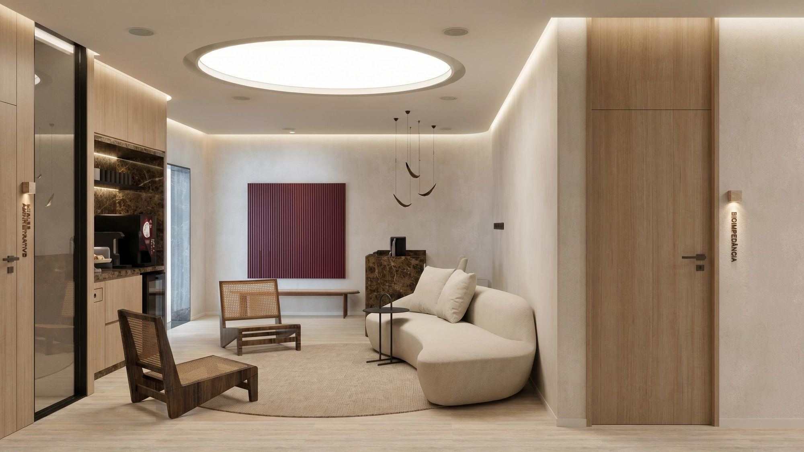
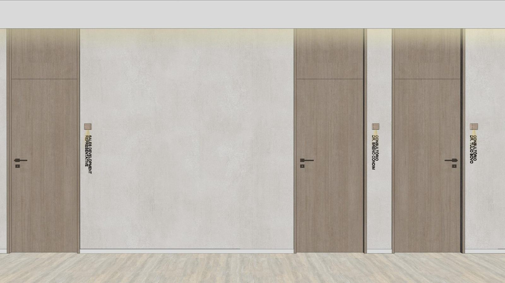

Dr. Túlio Bovo
A casa, por dentro [PENDENTE]

A casa · Moema, São Paulo
Rua —, 000 · Moema · São Paulo · SP [PENDENTE]
Abertura em outubro de 2026 [PENDENTE — confirmar se aparece]
01 — A casa
O ambiente é clássico. O que acontece dentro dele é atual.


02 — O percurso
Para você chegar sabendo o que vai acontecer.
A avaliação foi marcada na conversa do WhatsApp. Quem te recebe já sabe por que você veio.

Um lugar onde dá para respirar: luz quente, cadeira de palhinha, ninguém com pressa.

Começa pela escuta: sua história, sua rotina, o que parou de funcionar. A consulta não tem hora para acabar.

Lido junto, na tela. Você vê o que o médico vê, sem jargão, e sabe por que cada coisa foi pedida. A composição corporal é medida na bioimpedância, não estimada.
O tratamento é construído item a item, e você sai com o WhatsApp do seu médico — o mesmo que vai acompanhar você daqui em diante.

03 — A casa, por dentro
Três vídeos, gravados na clínica: a sala onde cada um atende, o exame sendo feito, e o que cada um escolheu ter aqui.


04 — Onde fica
Mapa [PENDENTE — entra com o endereço]
[PENDENTE]
Quem responde é o Instituto. Você conta o que parou de funcionar e a avaliação é marcada na conversa, em até um dia útil.